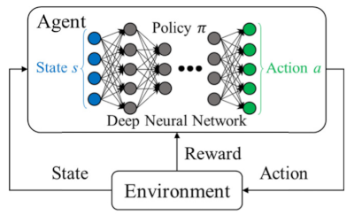

Day 1, Part A: Introduction to reinforcement learning and research environments¶
Learning goals¶
In addition to understanding principles of reinforcement learning (RL) and the tools we use to experiment in RL, you will learn several other things:
Ability to use common terminology in RL
Understand the importance of each step of the RL cycle
How to install and run a model in an OpenAI Gym environment
Think carefully about reward functions, and discuss possible improvements
Definitions¶
Simulation environment: Notice that this is not the same as the python/conda environment. The simulation environment is the simulated world where the reinforcement learning takes place. It provides opportunities for an agent to learn and explore, and ideally provides challenges that aid in efficient learning.
Agent (aka actor or policy): An entity in the simulation environment that performs actions. The agent could be a person, a robot, a car, a thermostat, etc.
State variable: An observed variable in the simulation environment. They can be coordinates of objects or entities, an amount of fuel in a tank, air temperature, wind speed, etc.
Action variable: An action that the agent can perform. Examples: step forward, increase velocity to 552.5 knots, push object left with force of 212.3 N, etc.
Reward: A value given to the agent for doing something considered to be ‘good’. Reward is commonly assigned at each time step and cumulated during a learning episode.
Episode: A learning event consisting of multiple steps in which the agent can explore. It starts with the unmodified environment and continues until the goal is achieved or something prevents further progress, such as a robot getting stuck in a hole. Multiple episodes are typically run in loops until the model is fully trained.
Model (aka policy or agent): An RL model is composed of the modeling architecture (e.g., neural network) and parameters or weights that define the unique behavior of the model.
Policy (aka model or agent): The parameters of a model that encode the best choices to make in an environment. The choices are not necessarily good ones until the model undergoes training. The policy (or model) is the “brain” of the agent.
Replay Buffer: A place in memory to store state, action, reward and other variables describing environmental state transitions. It is effectively the agent’s memory of past experiences.
A Technical Overview of Reinforcement Learning (RL)¶
For a less technical overview of RL, please read the blog post.
Learning a new skill can sometimes be daunting - maybe you read books, take a class, watch videos of people who already know - maybe you prefer to simply dive in and make a mess of things as you go, learning from the process. Similarly, there are a number of ways in which a computer model can learn a new skill. In the world of machine learning, RL takes the latter approach of diving right in and trying things out to see how they go.
RL Cycle¶
RL is used to train a model to perform one or more tasks. It is often applied when we do not have data that can be used to train a supervised learning model. Instead, we set up a simulated environment and give an agent the ability to explore and learn about the environment. The agent is a representation of something in the environment that can perform actions. It could be a person, a vehicle, a light switch, a control circuit, etc. In the diagram below, it is a robot.
At first, the agent knows nothing about the environment, but it can make observations of the state variables in the environment, such as locations and quantities of things, temperature, time, and so on. We can give the agent a reward for doing something we consider good, and it will continue to seek rewards. In general, the more it explores and experiments with actions in the environment, the better it learns.

The cycle typically completes a loop for each time step in the simulation.
The model (part of the agent in this diagram) outputs an action vector
The agent performs the action in the environment
The environment usually changes
The state variables and a reward value is passed to the model
The model takes the new state observations as input and outputs a new action vector for the next time step
Early learning can be comical as the agent stumbles around trying to learn, but as learning proceeds, the agent begins to develop better skills, and if given enough opportunity to learn, it can find interesting and innovative solutions.
Below, see the basic ant trained to only 50k steps.
import IPython.display as ipd
ipd.Image("images/base_ant_at50k.png")
And at 2M training steps
ipd.Image("../animations/base_ant.png")
The RL cycle diagram above is relatively simple. At the core of the agent is a model, essentially the brain of the agent. The agent also provides a way to interact with the environment, so we often associate observations and actions with it. The diagram below attempts to define the agent more explicitly. Notice that the policy is actually the set of parameters (weights) of the network. The network inputs are the state variables, and the outputs are the action variables.

Simulation Environments¶
In general, a simulated environment should be as close to the real environment as possible without making the simulation overly complex. This requires a balance between simulation details and computational efficiency, which is specific to each problem. Each problem has different challenges that the agent must overcome and the environement will need to be a good place for the agent to learn.
Most research and teaching in RL is done with simulated environments. They also provide common ground for benchmarking a new algorithm and showing how well it performs relative to existing algorithms. Several libraries of environments are available to do RL research, such as OpenAI Gym and MuJoCo. They commonly require a Physics engine, which is a way to represent Physics in a computer simulation. These engines enable things like gravity, friction, and so on.
For this course, we will use OpenAI Gym environments paired with the PyBullet3 Physics engine where needed (some environments are self-contained). We chose these because they are free, easy to set up, and we can modify the reward function, something that is important in RL work.
Let’s look at one of these environments.
Environment example: CartPole¶
The CartPole environment runs quickly and provides a simple case for discussion. It also does not need an external physics engine. This description is from the Gym website:
A pole is attached by an un-actuated joint to a cart, which moves along a frictionless track. The system is controlled by applying a force of +1 or -1 to the cart. The pendulum starts upright, and the goal is to prevent it from falling over.
Here is a gif showing a trained CartPole model.
ipd.Image("images/cart_pole.gif")
To make our own model, we’ll need to import gym and several classes and methods from the stable_baselines library.
import os
import gym
from stable_baselines3 import PPO
from stable_baselines3.common.monitor import Monitor
from stable_baselines3.common.vec_env import DummyVecEnv, SubprocVecEnv
from stable_baselines3.common.env_util import make_vec_env
from stable_baselines3.common.utils import set_random_seed
from tqdm import trange
import hvplot.pandas # This adds HoloViews plotting capability directly from a Pandas dataframe
import pandas as pd
Gym makes it easy to make an environment. First we’ll set up logging so that we can more easily track progress of learning, and then we’ll create the environment. Notice that we are wrapping the environment with the Monitor class to track the data that is generated during learning.
log_dir = "tmp/"
os.makedirs(log_dir, exist_ok=True)
env = gym.make("CartPole-v1")
env = Monitor(env, log_dir)
We will use PPO as the RL algorithm. It’s a good algorithm for many RL tasks, so we often use it in testing. The learn() method will execute the learning cycle.
model = PPO('MlpPolicy', env, verbose=0)
model.learn(total_timesteps=25000)
Let’s have a look at how the training turned out. Load the data into a dataframe and plot it with HoloViews.
training_reward = pd.DataFrame(pd.to_numeric(pd.read_csv("tmp/monitor.csv")[1:].reset_index()['index'])).reset_index()
training_reward.rename(columns={'level_0':"Episode",'index':"Reward"},inplace=True)
training_reward.hvplot(x="Episode",y="Reward")
reward_list = []
episode_reward = 0
obs = env.reset()
for _ in trange(1000):
action, _states = model.predict(obs)
obs, reward, done, info = env.step(action)
episode_reward += reward
env.render()
if done:
reward_list.append(episode_reward)
episode_reward = 0
env.reset()
env.env.viewer.close()
reward_to_plot = pd.DataFrame(reward_list)
reward_to_plot.hvplot()
The CartPole environment is very simple. It contains a cart that moves on a track, either to the left or to the right. The environment has gravity, but not wind. The agent is not evident in the environment. We only know that ‘something’ pushes the cart one way or another to increase or decrease its velocity.
The environment provides a testing ground for an algorithm’s ability to solve a fundamental control problem by choosing between only two actions, a force to the left or a force to the right. Examples of control problems include automotive cruise control and the thermostat that controls a heating system. The CartPole animation makes the environment a little more fun to use.
During the RL cycle, the cart is pushed back and forth to keep the pole balanced. If the pole falls, the learning episode is finished; the environment is reset and the agent tries again. The agent retains its knowledge for each episode of learning, so it slowly improves.
To gain a better sense of how well the agent learns over time, try making at least three plots of episodes vs reward. Suggested time steps are 10,000, 25,000, and 50,000. It might help to save each plot as an image then display each in a markdown file with
.
State-Action Space¶
The CartPole environment has a small state-action space.

State variables (observable variables):
cart position, x
cart velocity, v
pole angle, \(\theta\)
pole angular velocity, \(\omega\)
Action variables:
push left
push right
This simplicity helps make learning very fast, even on a small computer.
Reward¶
The reward function for any project is critical to the performance and generalization of the model. If the reward is too specific, the model will learn a very specific task. If the reward is too ambiguous, the model will probably not learn much.
For the CartPole problem, there are probably several effective reward functions that will work. The default reward function simply gives a point at each time step if the pole is still standing (>24 degree pole angle).
Here is a simplified version of the reward function (reward function 1):
if pole_angle >= 24:
reward += 1.0
else:
reward += 0.0
The longer the pole remains standing, the larger the reward.
Can you think of an equally effective reward function for CartPole?
Click to reveal answer
An equally effective reward function might be to give a point for every time step. The longer it balances the pole, the higher the reward. A better reward function might be a factor of the pole angle: reward += pole_angle/90Consider this reward function for CartPole (reward function 2):
if pole_angle >= 80:
reward += 1.0
else:
reward += 0.0
Is this function better or worse than the function above?
Click to reveal answer
This is tricky. This reward function is generally not well designed. The agent has no explicit incentive to keep the pole angle greater than 80, so the final model might not be very steady. It could move back and forth quickly, always keeping the pole angle around 80 degrees.Also, raising the pole angle threshold to 80 degrees (reward function 2) might make learning slower. Remember that the agent does not know anything about balancing poles when it first starts to learn. If it rarely gets a reward when it first starts to learn (because it’s hard to keep the pole above 80 degrees), it will take more time to learn.
Let’s think about why reward function 1 works well. It gives the agent a point if the pole is at any angle above 24 degrees. This angle is low enough that the agent will receive rewards even if the pole is falling down, and as long as the agent pushes the cart in the same direction, the pole will fall down more slowly, which produces more reward.
In practice, we know that the agent will eventually get very good at balancing the pole in a slow and steady manner. It does not have an explicit reward for being steady, but the fact that it is always exploring, like pushing even when the pole is close to 90 degrees, is probably the reason it continues to improve when it is allowed to learn over many episodes.
Considering this discussion, is reward += pole_angle/90 a better reward function?
env.close()